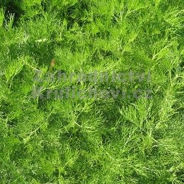

V našem závěrečném projektu bychom chtěly vytvořit webové stránky pro reálný business case s názvem BÉZŮV GRUNT.
Jde o
vybudování místa, kde se žije v souladu s přírodou a v duchu
udržitelného rozvoje. Kde se biodynamicky hospodaří za účelem přiměřené,
zejména potravinové, soběstačnosti. Využívají se moderní prostředky, ale
vždy s ohledem na nabyté zkušenosti předků. Tento prostor je otevřený i
podobně smýšlejícím lidem.
Bylinář
Další součástí projektu je BYLINÁŘ, kvízová aplikace, která bude zvyšovat povědomí o léčivých rostlinách rostoucích v okolí (nebo v ČR).
Léčivé rostliny jsou rovněž nedílnou součástí Bézova gruntu. Jsou tam pěstovány a každoročně zpracovávány na různé produkty, případně prodávány k výsadbě.
Proto by součástí námi připravované webové stránky byla i druhá část, kde bychom rády umožnily i dalším lidem, aby se o nich
dozvěděli více (formou kvízu a poskytnutím dalších informací), aby sami mohli využívat přírodní zdroje,
které nás nic nestojí, jsou všude kolem nás, a byly využívány už odedávna.
oman pravýmeduňka lékařskáostropestřec mariánský

pelyněk brotan
Osobní poznámka k projektu, nad rámec DA:
Protože by mělo jít o webovou stránku, která by se poté dala použít v reálném podnikání, bylo by fajn mít i nějakým způsobem aspoň trochu uspokojivě vyřešený backend (příjem objednávek, osobní data, otázka GDPR?). Velmi bych uvítala, kdyby někdo uměl, a byl ochotný, mi s tímto pomoci, se samostudiem navíc počítám. Vím něco málo o PHP a chodím teď na kurz Javy, pracovala jsem s SQL a Snowflakem, pokud by z toho něco šlo použít... Děkuji moc, Martina :-)